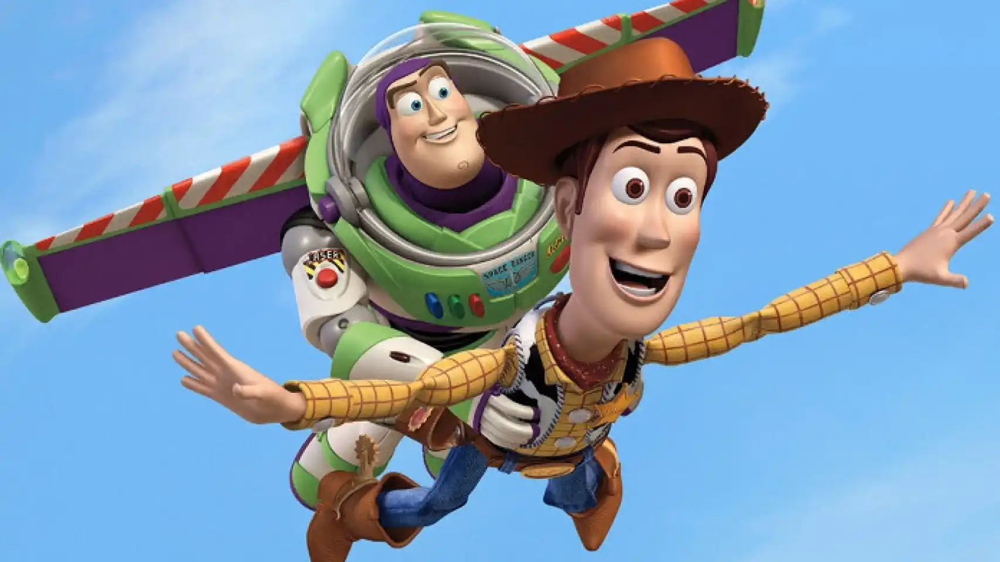

ul {
background: #000000;
border: 1px solid #7C7C7C;
list-style: none;
margin: 0;
padding: 0;
overflow: hidden;
}
ul li {
float: left;
width: 200px;
}
ul li a {
border-left: 1px solid #FFF;
border-right: 1px solid #7C7C7C;
color: #05FE6C;
display: block;
padding: .3em;
text-decoration: none;
}
Historia
Toy Story es una película infantil de animación por computadora dirigida por John Lasseter, estrenada en 1995 y producida por Pixar. Fue el primer largometraje de Pixar, además de la primera cinta animada completamente con efectos digitales en la historia del cine.3
Joss Whedon, Andrew Stanton, Joel Cohen y Alec Sokolow redactaron el guion, y Randy Newman compuso la banda sonora. El reparto principal estuvo integrado por Tom Hanks y Tim Allen, quienes prestaron sus voces en inglés a los personajes de Woody y Buzz, respectivamente. Para el proceso de animación, colaboraron un total de 110 empleados de Pixar,4 a diferencia de los 800 que trabajaron en una de las últimas producciones de Disney en aquellos años, El rey león (1994).5
La historia sigue las aventuras de un grupo de juguetes vivientes, en particular del vaquero Woody y el guardián espacial Buzz Lightyear. Si bien al principio rivalizan entre sí, conforme transcurre la trama se van volviendo amigos. Tras su estreno, Toy Story se convirtió en la cinta más taquillera de EE. UU. y Canadá en su primer fin de semana de exhibición.En total recaudó más de 191 millones USD en ambos países, y más de 361 millones adicionales a nivel internacional.Se hizo acreedora a críticas positivas en su gran mayoría, en las que se elogió la innovación técnica de la animación y el guion.
Disney y Pixar comenzaron una franquicia inspirada en los personajes y elementos de la película, que incluye juguetes y videojuegos, entre otros productos diversos. La trama de Toy Story fue continuada en el cine con Toy Story 2 (1999), Toy Story 3 (2010), y Toy Story 4 (2019).
Toy Story comienza con una misión de reconocimiento realizada por un grupo de juguetes, encabezados por el vaquero Woody, para identificar los obsequios recibidos por su propietario, Andy, con motivo de su sexto cumpleaños. Entre los regalos se encuentra una figura de acción, el guardián espacial Buzz Lightyear, que rápidamente pasa a ser el predilecto del niño. Si bien la mayoría de los juguetes, entre ellos Bo Peep, Mr. Potato Head, Hamm, Slinky y Rex, reciben con entusiasmo a Buzz, Woody busca deshacerse en secreto de él por haberlo sustituido como el muñeco favorito de Andy. Por otra parte, Buzz desconoce su identidad como un juguete y cree que su objetivo es regresar de vuelta a su planeta natal.
La rivalidad entre el vaquero y el guardián espacial llega a un clímax cuando, durante una salida al restaurante Pizza Planet, Andy accidentalmente los deja olvidados en una estación de servicio. Si bien Woody tiene la certeza de reencontrarse con su dueño en el citado restaurante, Buzz prefiere seguir su propio camino para viajar al espacio exterior. Consciente de que no puede volver sin su compañero y sin poder hacerlo entrar en razón al explicarle su naturaleza como un juguete, el vaquero lo engaña al hacerle creer que la nave decorativa de una camioneta de Pizza Planet habría de llevarlos a su planeta. No obstante, ya en el restaurante, son capturados por el vecino de Andy, Sid, que los lleva consigo a su casa.
En las escenas finales se aprecia cómo Buzz y Woody regresan con sus amigos con ayuda del auto a control remoto de Andy justo antes de que se concrete su mudanza a un nuevo hogar en el que, durante Nochebuena, descubren como parte de otra misión de reconocimiento que Andy habría de recibir un perro como obsequio navideño.
Imagen de la portada de Toy Story
| WEBS
|
| jugetestoystory |
Juguetes |
| |